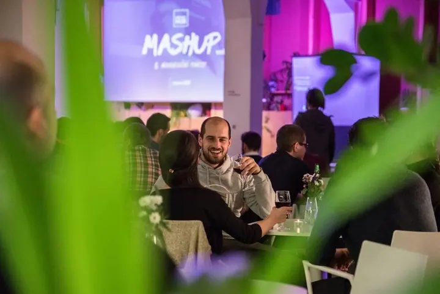

01 / 04
Portréty
Byznys portréty, fotky pro modelky, kapely i týmy. Ráda vás vyfotím tak, abyste na fotce byli opravdu vy, ať už ve studiu, v kanceláři nebo venku.
Zeptat se na termín→


Fotím lidi, věci i malé detaily
Zeptat se na termín →(01) Ahoj
Jmenuji se Míša Dvořáková a jsem prostě ta, co fotí. Nejčastěji fotím portréty , produkty a interiéry, ale třeba i reportáž z akcí . Těch žánrů je víc, já vím, a právě ta rozmanitost mě baví.
(02) Co fotím
01 / 04
Byznys portréty, fotky pro modelky, kapely i týmy. Ráda vás vyfotím tak, abyste na fotce byli opravdu vy, ať už ve studiu, v kanceláři nebo venku.
Zeptat se na termín→02 / 04
Jídlo, pivo, kabelky, šperky nebo ručně dělané věci. Hledám detaily, které na první pohled nepraští do očí, a právě ty pak vaše produkty prodávají.
Zeptat se na termín→03 / 04
Firemní večírky, prezentace, koncerty i dětské oslavy. Nenápadně fotím, co se během akce děje, a vy pak máte fotky pro web, sociální sítě i na památku.
Zeptat se na termín→Dále nabízím
Kuchyně, kanceláře, restaurace nebo bazény. Nafotím prostory tak, aby vynikla jejich atmosféra a práce, kterou do nich vložili architekti a řemeslníci.
↗(03) Portfolio
Kliknutím fotku zvětšíte · fotografie jsou ilustrační
(04) Postup
Od první zprávy po hotovou galerii.
Krok 1 z 4
Podělte se se mnou o svá přání, představy a požadavky. Klidně e-mailem, telefonem nebo přes WhatsApp.
Krok 2 z 4
Společně projdeme, co a kde budeme fotit a k čemu fotky budete potřebovat.
Krok 3 z 4
Pak už to nechte na mně. Soustředím se na detaily i na celkovou atmosféru.
Krok 4 z 4
Fotky vyberu, upravím a pošlu vám je připravené pro web, sociální sítě nebo tisk.
Žánrů je víc, ale právě ta rozmanitost mě baví.
(05) Za objektivem
Všechno začalo v roce 2004, kdy se mi do rukou dostal jeden z prvních digitálních foťáků. Tehdy našláplá dvoumegapixelová krabička byla pro mě naprostý zázrak. Cvakala jsem znovu a znovu, žádné drahé vyvolávání filmů, výsledek byl vidět hned.
Ve čtrnácti jsem samozřejmě fotila hrozné nesmysly, ale s nadšením. A to mi zůstalo dodnes. Ať fotím cokoliv, baví mě hlavně detaily a všímat si věcí, které na první pohled nepraští do očí. Být takhle multifunkční je pro mě trochu výzva a to mě na tom baví.
Kromě focení mě baví dělat lidem radost, a přesně to fotky dokážou. Nefunguju bez kafe, jsem závislá na chilli a sportu a miluju cestování. Když máte nápad na focení nebo zajímavou spolupráci, ozvěte se, něco určitě vymyslíme.
Míša
Míša Dvořáková · Fotografka portrétů, produktů a akcí
Nejčastěji portréty, produkty a interiéry, ale ráda nafotím i reportáž z vaší akce. Když máte něco jiného, napište, něco vymyslíme.
Jsem fotografka z Prahy, takže nejčastěji fotím tady. Na místě a podmínkách se domluvíme podle toho, co potřebujete.
Cena záleží na rozsahu a typu focení. Popište mi, co potřebujete, a já vám pošlu nabídku na míru.
Ano, fakturuji na IČO. Nejsem plátce DPH.
(07) Kontakt
Napište pár vět o tom, co si představujete, a termín, který se vám hodí.